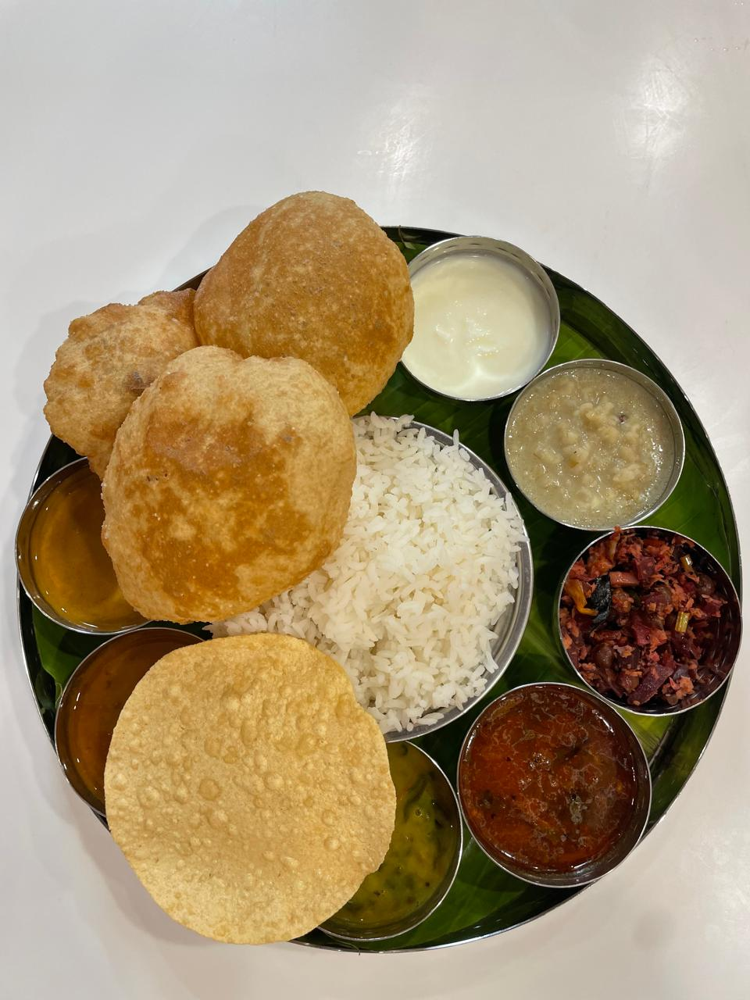
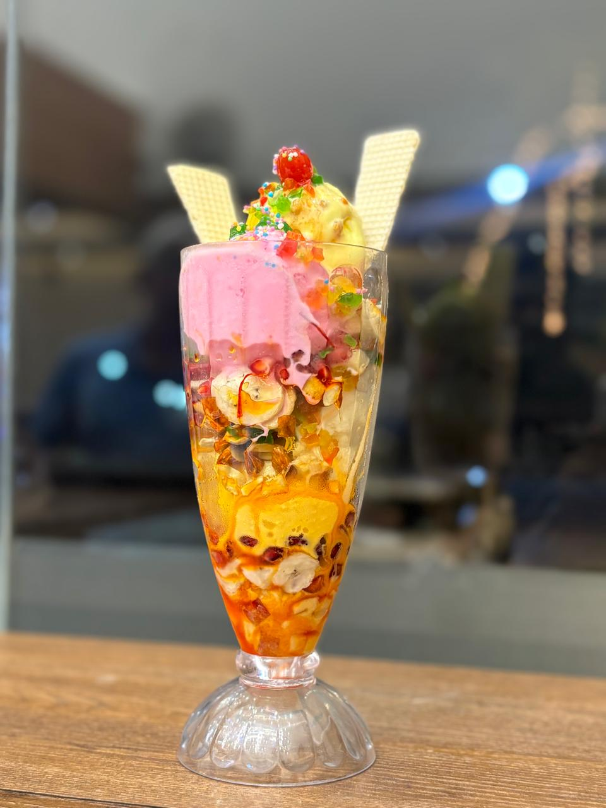
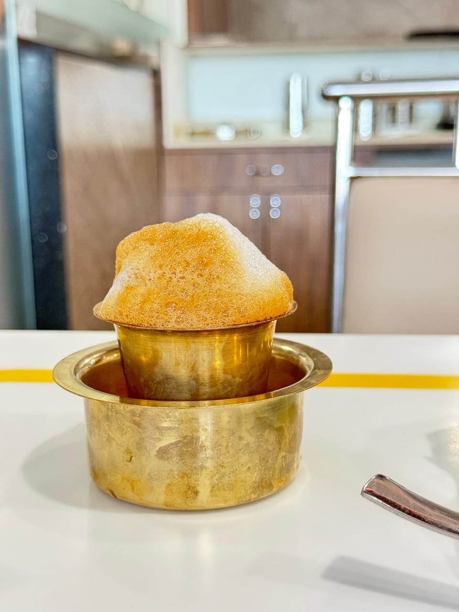

When it comes to experiencing the true flavors of the South, authenticity is everything. Mathuram Cafe stands proudly as the most authentic South Indian restaurant in Brahmavara, bringing you traditional recipes passed down through generations. Located Opposite Krishi Kendra, we are a haven for lovers of classic South Indian cuisine.

The Art of the Perfect Dosa
A true South Indian meal often revolves around the dosa. At Mathuram Cafe, dosa preparation is an art form. We use a precise blend of rice and lentils, fermented perfectly to achieve the iconic golden-brown crispness and soft interior. From the classic Masala Dosa to the rich Neer Dosa and the indulgent Ghee Roast, our Dosa selection is unrivaled in Brahmavara.
Served with our signature coconut chutney and piping hot, flavorful sambar, every bite transports you to the heart of South Indian culinary tradition.
Beyond Dosas: Idlis, Vadas, and More
But our expertise doesn't stop at dosas. Our morning menu features the softest, fluffiest idlis that melt in your mouth, and crispy, savory Medu Vadas that provide the perfect crunch. These staples are prepared fresh every morning, making us a top destination for breakfast.

The Essential Filter Coffee
No South Indian meal is complete without the quintessential Filter Coffee. Brewed strong with a perfect blend of chicory and premium coffee beans, our filter coffee is aerated to a frothy perfection. It’s the perfect way to start your day or conclude a hearty meal.
A Cultural Culinary Journey
At Mathuram Cafe, we believe in preserving the cultural heritage of South Indian dining. The aroma of curry leaves, the sizzle of mustard seeds, and the vibrant colors of our dishes are a testament to our dedication. We use traditional cooking methods and locally sourced ingredients to maintain the authenticity that our patrons expect and love.
Whether you are craving a light snack or a full South Indian Thali, our restaurant offers a comfortable, air-conditioned environment to enjoy your meal. Located right opposite Krishi Kendra, we are easily accessible for both locals and travelers on the highway.

Explore our South Indian menu today and embark on a flavorful journey at Brahmavara's premier South Indian restaurant.